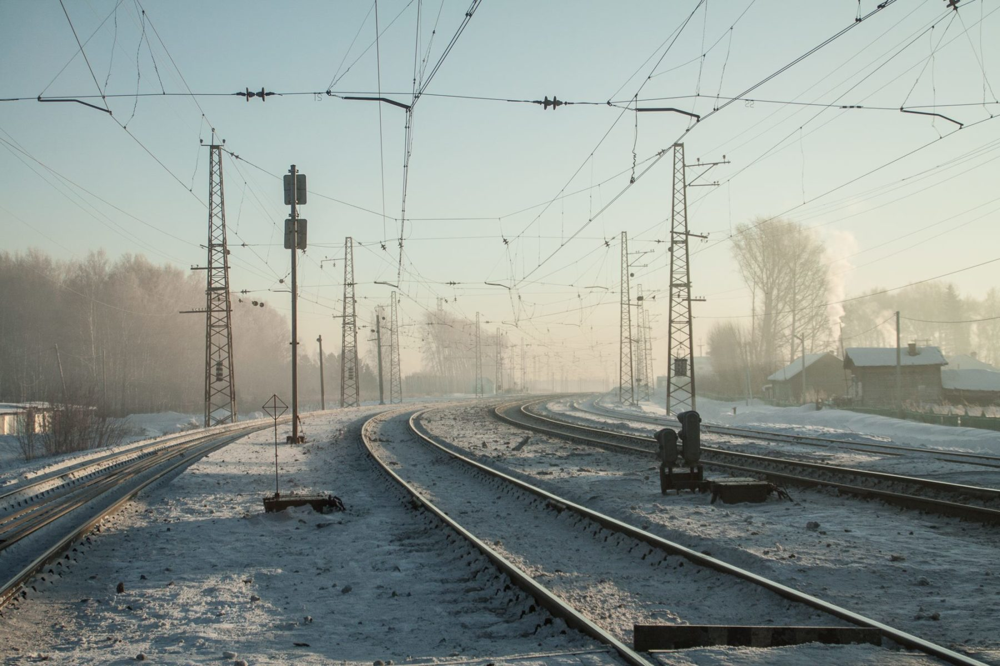

Центральный объект посёлка Ижморский — железная дорога.
Собственно, посёлок и образовался как станция на Запсибе. В детстве родители редко кому разрешали ходить «за линию» (переходить железную дорогу). Никаких надземных переходов над дорогой нет, а какой-нибудь товарный состав практически всегда стоял через весь посёлок. Тогда нужно было или перелезть сверху сцепки, или подлезть под состав.
Были случаи, когда состав трогался, пока ты под ним перелазишь. Это весьма неприятно, но состав трогается медленно, поэтому ничего страшного, если держать себя в руках.
Однажды я остался между двумя едущими в разные стороны на большой скорости поездами. Очень страшно, сообразил просто сесть на землю.
Ещё из развлечений было класть на рельсы пробки от пива: «плющить пробки». Можно было положить вдоль рельса гвоздь (получался нож) или даже патроны от мелкашки. Патроны весело стреляли.
Если поезд и сбивал кого, то только пьяных. И то редко. Часто, стоя у дороги, можно было помахать дембелям, которые ехали через страну в крытых товарных вагонах с открытой дверью.
Запах креозота для меня с детства ассоциируется с романтикой путешествий.